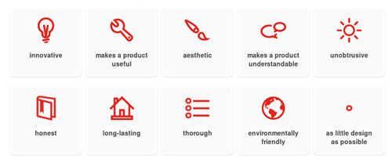
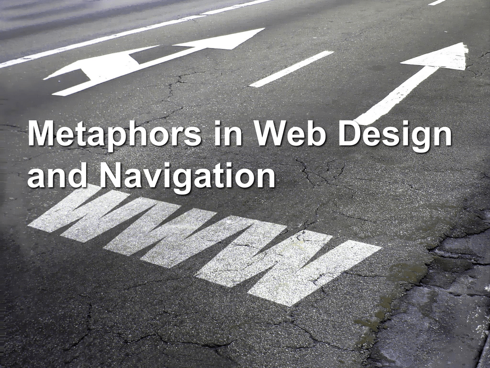

Introduction
An interface metaphor is a set of user interface visuals, actions and procedures that exploit specific knowledge that users have previously gained from other websites. The purpose of the interface metaphor is to give the user knowledge in a simplistic format about how to interact with the user interface. They are designed to be similar to our own physical entities but also contain their own properties, for example, desktop metaphors and web portals. They can be based on an activity and object or a combination of both work with user’s knowledge to help them understand the unfamiliar. Examples of interface metaphors are the magnifying glasses that represent the “zoom in” function or folder icons to show where files are contained. These are used in most current operating systems; however, this technology is susceptible to change as computers become more advanced.
Changing interface metaphors
The down side to changing interface metaphors on a constant basis is that the owners of software with many users are reluctant to make big changes and their interfaces evolve permanently to keep their familiar look and familiarity. Software designers attempt to make applications easier to use for both novice and adept users by creating concrete metaphors that resemble the user’s real-world experiences. Continual technological improvement has made metaphors depict these real-world experiences more realistically to ultimately enhance interface performance.
Metaphors are a pivotal part of language and thought. It appears not only in poetry and novels, but also in everyday speech about common matters. The characteristics of metaphor in language are the same that govern how metaphor works in an interface. Just as metaphors invisibly permeate everyday speech, they also occur throughout the interfaces that humans use and design.

Metaphoric comparisons and interface presentations do more than render static denotative correspondences. They have motivational and affective consequences for users. They interact with and frame users' problem-solving efforts in learning about the target domain. Metaphors have been employed to increase the initial familiarity of the target domain, but they have an inevitable further role to play. The ultimate problem that the user should solve is to develop an understanding of the target domain itself—a mental model. Interface metaphors should also be viewed as tools proffered to users for articulating mental models.
Conclusion.
User-interface metaphors are a widely used, but poorly understood, technique employed in almost all graphical user-interfaces. Although considerable research has gone into the applications of the technique, little work has been performed on the analysis of the concept itself.
Bibliography
Carroll, J.M., Mack, R.L. and Kellogg, W.A., 1988. Interface metaphors and user interface design. In Handbook of human-computer interaction (pp. 67-85). North-Holland.
Erickson, T.D., 1995. Working with interface metaphors. In Readings in Human–Computer Interaction (pp. 147-151). Morgan Kaufmann.